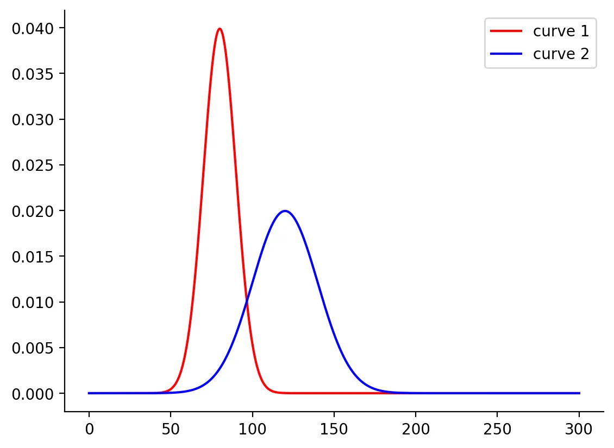
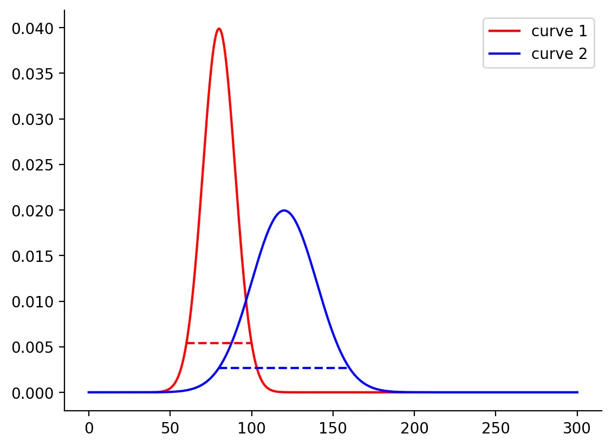

written by Eric J. Ma on 2023-04-29 | tags: chromatography numpy jax vmap lax programming tips coding til
🧐I encountered a tricky problem when working on chromatography: I needed to find x-values on concave curves at a specific height without solving simultaneous equations. Check out my blog post 📝 to see how I went from a simple for-loop solution to using JAX's vmap for a more effective, expressive, and compatible solution. This was a fun programming problem to solve! 🔎📈📊😃
While working on a chromatography problem, I encountered a sub-problem where I needed to find the x-values on a concave curve where the height at those points was 13.5% of the maximum height.
Let me provide a concrete example.
# Test np.where with vmap import jax.numpy as np from jax import random from jax.scipy.stats import norm import matplotlib.pyplot as plt from jax import vmap mus = np.array([80, 120]) sigmas = np.array([10, 20]) x = np.linspace(0, 300, 5000) xs = np.vstack([x, x]) y1, y2 = vmap(norm.pdf)(xs, mus, sigmas) ys = np.vstack([y1, y2])
Visually, it looks like this:
import seaborn as sns plt.plot(x, y1, color="red", label="curve 1") plt.plot(x, y2, color="blue", label="curve 2") plt.legend() sns.despine()

The most obvious solution is to write a for-loop:
def values_at_frac_max(xs, ys, fraction: float = 0.135): min_x = None for x, y in zip(xs, ys): if y >= fraction * ys.max(): min_x = x break max_x = None for x, y in zip(xs[::-1], ys[::-1]): if y >= fraction * ys.max(): max_x = x break return min_x, max_x
Indeed, this was the solution that Copilot gave me, and I ran with it for a while until I later thought, "hmm, this isn't good enough. I can definitely do better."
I decided to implement the function using NumPy-only functions, and it turned out like this:
def values_at_frac_max(xs, ys, fraction: float = 0.135): # The naive way using NumPy: max_height = np.max(ys) idxs = np.where(ys >= max_height * fraction)[0] return xs[idxs.min()], xs[idxs.max()] values_at_frac_max(x, y1, 0.135), values_at_frac_max(x, y2, 0.135)
That gives us:
(Array([60.012005, 99.98 ], dtype=float32), Array([ 79.996, 159.992], dtype=float32))
Now, this is much better: compact and expressive. However, this is incompatible with JAX's vmap.
Wait, why do I want vmap?
Well, it's because I wrote my functions to be able to operate on a single curve, but I will eventually need to do this for a rolling window of pairs of curves. This means needing to vmap over each pair of curves and then lax.scan over each pair.
So why is the function above incompatible with vmap?
The culprit here is that np.where returns a vector with a variable size, not fixed.
As it turns out, the JAX devs knew about this problem and put in a size argument. This allowed me to re-express the solution as follows:
def values_at_frac_max(xs, ys, fraction: float = 0.135): # The fancy way using JAX's `size` argument: max_height = np.max(ys) idxs_min = np.where(ys >= max_height * fraction, size=1)[0] idxs_max = np.where(ys >= max_height * fraction, size=len(xs))[0] return np.array([xs[idxs_min.min()], xs[idxs_max.max()]])
Here are the key tricks:
idxs_min to grab out the first point at which the y-values are greater than or equal to the desired height. This is why we grab out just one element.idxs_max to do the same, except we use len(xs) as the size to return, as it is guaranteed to give us the upper-bound index.Using vmap on the new values_at_frac_max function gives us the following:
vmap(values_at_frac_max)(xs, ys)
Array([[ 60.012005, 99.98 ],
[ 79.996 , 159.992 ]], dtype=float32)
Plotting the points shows us that we got the right thing:
plt.plot(x, y1, color="red") plt.plot(x, y2, color="blue") plt.hlines( y=0.135 * y1.max(), xmin=float(values_wanted[0, 0]), xmax=float(values_wanted[0, 1]), color="red", linestyle="--", ) plt.hlines( y=0.135 * y2.max(), xmin=float(values_wanted[1, 0]), xmax=float(values_wanted[1, 1]), color="blue", linestyle="--", )

@article{
ericmjl-2023-how-to-use-npwhere-in-a-vmap-ed-function,
author = {Eric J. Ma},
title = {How to use NumPy's where function with JAX's vmap},
year = {2023},
month = {04},
day = {29},
howpublished = {\url{https://ericmjl.github.io}},
journal = {Eric J. Ma's Blog},
url = {https://ericmjl.github.io/blog/2023/4/29/how-to-use-npwhere-in-a-vmap-ed-function},
}
I send out a newsletter with tips and tools for data scientists. Come check it out at Substack.
If you would like to sponsor the coffee that goes into making my posts, please consider GitHub Sponsors!
Finally, I do free 30-minute GenAI strategy calls for teams that are looking to leverage GenAI for maximum impact. Consider booking a call on Calendly if you're interested!